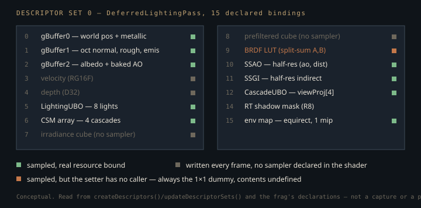

Monograph · Tree · ← Module hub · Deferred lighting
deferred
Deferred lighting
The froxel's light loop, IBL, SSAO, shadows, BRDF eval.
The position it never reconstructs
Textbook deferred shading stores depth and rebuilds world position per pixel from an inverse view-projection matrix. OHAO does not. GBuffer0 is an `R16G16B16A16_SFLOAT` target carrying world position in RGB and metallic in A, and the lighting shader reads the position straight out of it:
vec3 fragPos = gBuffer0Sample.rgb;shaders/core/deferred_lighting.frag:172The `invViewProj` matrix is still the first 64 bytes of the push-constant block and no line of the shader body reads it; the depth attachment is written into descriptor binding 4 every frame and the fragment shader never declares a sampler for it.
mat4 invViewProj;shaders/core/deferred_lighting.frag:62The rejected alternative — depth plus inverse view-projection, which the push block is still sized for — costs a matrix multiply and a divide per pixel. Keeping position resident instead costs 48 bits per pixel of extra G-Buffer write and read bandwidth: the RGB of the RGBA16F target, not all 64, because the alpha channel carries metallic and has to be stored under either scheme. It also pins world coordinates to half-float precision: sub-millimetre near the origin, but ~0.5 units of representable spacing once a fragment is 1000 units out, where lighting quantises into terraces. For model-sized scenes the trade is free; a kilometre-scale world is where it breaks first.
The sky sentinel is a clear colour
Background pixels are detected by an exact float comparison against the value the G-Buffer pass clears GBuffer0 to — all four channels zero.
if (gBuffer0Sample.rgb == vec3(0.0) && gBuffer0Sample.a == 0.0) {shaders/core/deferred_lighting.frag:166clearValues[0].color = {{0.0f, 0.0f, 0.0f, 0.0f}}; // Position (rgb) + Metallic (a)ohao/render/deferred/gbuffer_pass.cpp:131Those two lines are one contract split across two files. Change the clear colour to anything else — a far-plane position, a debug magenta — and every background pixel falls through into the full lighting loop. The sentinel also has a real, if narrow, false positive: a non-metallic fragment sitting exactly on the world origin is classified as sky and written as transparent black.
Any number of lights, the froxel's few per pixel
The lights are a storage buffer of 64-byte `LightGpu` records at binding 5, with no size in the declaration, and the froxel lists the `lights.cluster` pass builds sit beside it at binding 16:
layout(set = 0, binding = 5, std430) readonly buffer Lights { LightGpu lights[]; };shaders/core/deferred_lighting.frag:24A pixel finds its froxel from its screen tile and the logarithm of its view depth, and loops over that froxel's list, which holds light indices in ascending order; with push flag bit 6 it loops over every light in the table instead. The clustered-lighting unit covers the lists, how they are built and why the two loops give the same image.
const LightGpu light = lights[clustered ? clusterData[listBase + k] : k];shaders/core/deferred_lighting.frag:250The record is the host's `LightData` without its `lightSpaceMatrix`: `LightClusters` copies the four `vec4`s across when it writes a frame slot's table, so the matrix the light table computes for its one legacy shadow-map caster never reaches the GPU. `params.z`, the shadow-map index, does, and the shader never reads it. It reads `.x` and `.y`, the two spot-cone cosines, and `.w`, the light's RT shadow slot (below).
std::memcpy(g.params.data(), &l.params, sizeof(g.params));ohao/render/deferred/light_clusters.cpp:36light.params.x, light.params.y);shaders/core/deferred_lighting.frag:267The `BRDFSurface` — metallic sharpening, F0 derivation, normalised N and V — is built once before the loop, so the per-light work is `evaluateBRDF` from `brdf_ggx.glsl` (the height-correlated Smith stack with Burley diffuse and Kulla-Conty compensation, a different BRDF from the one the path tracer runs), plus `calculateAttenuation` for point and spot lights and a cone term for spots. On the CSM path it is also a whole `calculateShadowCSM` per iteration — a matrix transform and a nine-tap PCF — whose two arguments do not depend on the light index, so a second directional light recomputes a scalar identical to the first.
shadow = calculateShadowCSM(fragPos, viewDepth);shaders/core/deferred_lighting.frag:283Attenuation: a physical falloff with a hard floor
Point and spot lights use the windowed inverse square that UE4 popularised:
where $d$ is the distance from fragment to light and $r$ is the light's range, packed into `light.direction.w`. The first factor is the physical $1/d^2$; the second is a window that drives both the value *and* its derivative to zero at $d = r$ — squaring the window is what makes the derivative vanish, so a light's influence ends without a visible edge.
return invSq * windowing * windowing;shaders/core/deferred_lighting.frag:88The window is also what makes a range cull exact. Past $d = r$ the clamp returns exactly 0, so the term a light adds there is exactly zero, not merely small. The loop skips a light whose attenuation is exactly 0 before any BRDF work, and the froxel lists leave out lights whose range sphere cannot reach the froxel: both drop only terms that would have added $+0$.
if (attenuation == 0.0) continue; // adds exactly zero: past its range or its coneshaders/core/deferred_lighting.frag:270Where OHAO departs from UE4 is the denominator. UE4 divides by $d^2 + 1$, softening the near field everywhere; OHAO keeps the true $1/d^2$ and clamps only the singularity, at $d = 0.1$ world units. Inside that radius a point light stops brightening, and that clamp is the only thing between a light placed inside geometry and an unbounded value in an `R16G16B16A16_SFLOAT` target whose ceiling is 65504.
float invSq = 1.0 / max(d2, 0.01); // inverse-square (physical)shaders/core/deferred_lighting.frag:86One visibility channel per shadow light
Shadowing is decided per fragment before the BRDF, and the two shadow techniques are mutually exclusive rather than combined: if an RT visibility view is bound the C++ side sets bit 5 and never sets the CSM bit.
m_params.flags |= 32; // RT shadows (bit 5)ohao/render/deferred/deferred_lighting_pass.cpp:181The visibility is a screen-space `R32G32_UINT` image holding eight 8-bit channels, one per shadow-casting light (x: lights 0-3, y: 4-7, lowest byte first), bound as a `usampler2D` at binding 14. It is read once before the loop with an integer `texelFetch` at the fragment's own pixel — no filtering, no UV — because the RT passes write it at the lighting pass's resolution:
const uvec2 rtShadow = rtShadows ? texelFetch(rtShadowVisibility, ivec2(gl_FragCoord.xy), 0).xy : uvec2(0u);shaders/core/deferred_lighting.frag:248Each light names its channel in `params.w`, which the light table fills: -1 for a light that never casts (its `castShadows` off, or an emissive proxy), otherwise 0 to 7, the caster's position among the first eight casters in light order. A caster past the eighth gets -1 too and renders unshadowed; the light table counts those.
int slot = int(round(light.params.w));shaders/core/deferred_lighting.frag:277A negative slot is never occluded. With RT shadows on, a light's shadow is its byte of the word divided by 255, and a light whose byte is 0 is skipped, another term that would have added exactly zero:
shadow = float((word >> (8u * uint(slot & 3))) & 255u) * (1.0 / 255.0);shaders/core/deferred_lighting.frag:281if (shadow == 0.0) continue; // fully occluded: adds exactly zeroshaders/core/deferred_lighting.frag:286With them off, the slot only says whether the light casts at all, and the CSM path decides the rest. That path is gated on `lightType == 0`, so point and spot lights cast no shadow without RT at all. Cascades themselves are a 3×3 PCF of hardware depth comparisons on the array slice chosen by view-space depth, and the cascade UBO carries a `cascadeBlendWidth` the shader never reads:
float cascadeBlendWidth;shaders/core/deferred_lighting.frag:45so a cascade transition is a hard switch at the split distance, visible as a discontinuity in filter width rather than a blend.
The IBL that never received its cubemaps
void setIBLTextures(VkImageView irradiance, VkImageView prefiltered,ohao/render/deferred/deferred_lighting_pass.hpp:32Bindings 7, 8 and 9 therefore resolve, every frame, to a 1×1 `R8G8B8A8_UNORM` dummy that is allocated device-local and barriered straight out of `VK_IMAGE_LAYOUT_UNDEFINED` without ever being cleared or uploaded — its texel value is undefined by specification. Only 9 is ever read: the frag declares no sampler for either cubemap binding, so 7 and 8 are written into the set each frame and never touched by any instruction.

The shader routes around all of it. It ignores the cubemap bindings entirely, samples the raw equirectangular HDR at binding 15, and when the LUT fetch comes back near zero substitutes an analytic pair for the split-sum scale and bias:
brdf = vec2(max(1.0 - roughness, 0.04), roughness * 0.25);shaders/core/deferred_lighting.frag:335The surrounding formula is the standard split-sum approximation
with $L_{\text{pre}}$ the roughness-filtered environment radiance along the reflection vector $R$, $\alpha$ roughness, and $(A,B)$ the precomputed scale/bias of the environment BRDF. Nothing in OHAO precomputes them. The fetch lands on the uninitialised dummy, so $(A,B)$ is whatever those four bytes happen to hold, and the analytic substitution is a guard on the sampled value, not a guarantee: it fires only when the two components sum to under $10^{-4}$. A dummy reading back as zeros takes the analytic branch; a dummy reading back as anything else is used as-is. Either way the shape is right and the integral is not.
if (brdf.x + brdf.y < 1e-4) {shaders/core/deferred_lighting.frag:334vec3 specularAmbient = prefilteredColor * (F * brdf.x + brdf.y);shaders/core/deferred_lighting.frag:338$L_{\text{pre}}$ has a sharper problem. The shader asks for a mip proportional to roughness, on an assumption stated in its own comment:
float lod = roughness * 9.0; // assuming 10 mip levels for 1024x512shaders/core/deferred_lighting.frag:320The only producer of the view that ever reaches binding 15 creates that image with one mip level, and builds a single-level view over it:
imgInfo.mipLevels = 1;ohao/gpu/vulkan/env_upload.cpp:64Every `textureLod` therefore clamps to mip 0. Roughness does not blur the environment reflection, and the diffuse term — a single texel fetched at LOD 9 along the normal — is a sharp environment sample, not a cosine convolution.
vec3 irradiance = textureLod(envMap, nUV, 9.0).rgb;shaders/core/deferred_lighting.frag:325A mirror and a chalk sphere thus receive the same environment sample here, differing through Fresnel, through whatever $(A,B)$ turned out to be — and through one term the split-sum formula does not contain. Above `metallic > 0.5` the shader adds a second, F0-weighted specular contribution floored at four times the ambient intensity, so dark metals do not crush to black when the environment sample is dim: a hand-tuned brightener that fires on the mirror and never on the chalk.
specularAmbient += surface.F0 * max(prefilteredColor, vec3(pc.ambientIntensity * 4.0));shaders/core/deferred_lighting.frag:343The plumbing exists; the convolution does not.
Weather channels with no driver
Four branches in the shader modulate albedo, roughness and metallic for rain wetness, mud, snow and frost. Three of them are orientation-aware: wetness and mud scale by `clamp(N.y * 2.0, 0, 1)`, snow by a steeper ramp that stays at zero until the normal is more than ~17° off horizontal, so water pools and snow settles on upward-facing surfaces.
float slopeFactor = clamp((N.y - 0.3) * (1.0 / 0.7), 0.0, 1.0);shaders/core/deferred_lighting.frag:194Frost has no such term: its branch reads the push constant straight into the mix weight, so undersides, walls and ceilings take the same pale-ice tint and the same collapse to roughness 0.08 as the ground does.
float f = pc.frostCover;shaders/core/deferred_lighting.frag:213All four cost 24 bytes of the push block and are permanently inert: the three setters that would drive them have no caller.
void setWetness(float w) { m_params.wetness = glm::clamp(w, 0.0f, 1.0f); }ohao/render/deferred/deferred_lighting_pass.hpp:67The physics side declares the same triple — `PhysicsWorld::updateTerrainFriction` takes wetness, snow and frost — and is equally uncalled, so a weather system was designed across two subsystems and never given a driver. Cheap to revive; not a shipped feature.
Contracts
- GBuffer0's clear colour and the shader's sky test are one invariant in two files. Changing either alone sends background pixels through the lighting loop.
- The pass owns one descriptor set per frame in flight (`maxSets = MAX_FRAMES_IN_FLIGHT`, three today), and `execute(cmd, frameIndex)` rewrites all 16 bindings of `m_descriptorSets[frameIndex]` only, at record time. Its inputs — the slot's light table, the froxel lists, SSAO, RT shadow mask, GI, env map — can change between frames, so the set has to be rewritten; a single shared set would be rewritten while up to two already-submitted frames still read it. The per-slot set is safe because `VulkanRenderer::renderDeferred` waits the fence of `m_currentFrame` and then records the deferred renderer with that same slot, so the set's previous use is retired. The contract is on the caller: `frameIndex` must be the slot whose fence was waited. {{cite ohao/render/deferred/deferred_lighting_pass.hpp "std::array<VkDescriptorSet, MAX_FRAMES_IN_FLIGHT> m_descriptorSets{};"}} {{cite ohao/gpu/vulkan/render_dispatch.cpp "m_deferredRenderer->render(cmd, m_currentFrame);"}}
- `LightingParams` is 184 bytes, all scalar after `screenSize`; `ambientIntensity`, `sliceScale` and `sliceBias` sit after `cameraPos`, `wetness` and `snowCover`, and the one `paddingF` after `frostCover` keeps the C++ struct byte-identical to the push block, whose comment states the same total. Any field added to one side must be added to the other.
- Every skipped term must be exactly zero: the `attenuation == 0.0` and `shadow == 0.0` tests, and the froxel lists, are what make clustered lighting equal the every-light loop byte for byte. An attenuation law without a hard zero past `direction.w` breaks both.
- Binding an RT visibility view disables CSM for that frame outright. A light's `params.w` and the visibility's channels are one contract with the light table and the RT shadow passes (`rt/shadow_trace.slang`, `rt/shadow_filter.slang`): the table hands out slots 0 to 7 in the same order it lists `shadowLights()`, and the RT passes write light *i* into channel *i*. The visibility image must stay the lighting pass's size, since it is fetched at `gl_FragCoord`.
- Declared or carried and never read by this shader: `params.z`, `cascades.normalBias`, `cascades.cascadeBlendWidth`, `pc.invViewProj`, and descriptor bindings 3 and 4 (written, no sampler declared) and 7 and 8 (likewise). Binding 13 does not exist: the layout jumps from the cascade UBO at 12 to the RT shadow visibility at 14.
Source files
shaders/core/deferred_lighting.fragohao/render/deferred/gbuffer_pass.cppohao/render/deferred/light_clusters.cppohao/render/deferred/deferred_lighting_pass.cppohao/render/deferred/deferred_lighting_pass.hppohao/gpu/vulkan/env_upload.cppParent hub for the full pipeline narrative; this page is the file-level design unit. Sitemap · hover glossary terms anywhere.